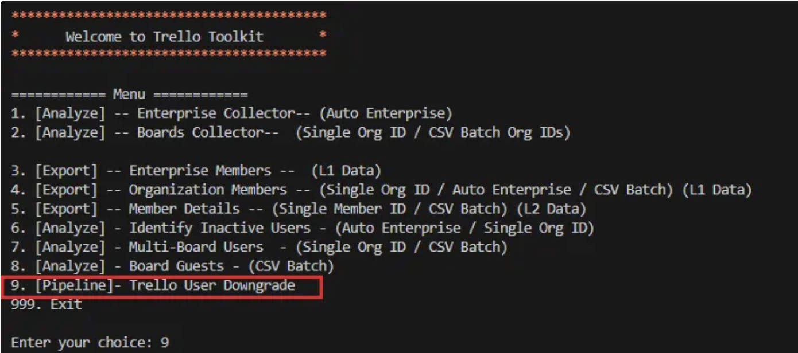

黃巧希 Joanna Huang
github.com/catseyehuang ｜ joannahep@gmail.com
宏達國際電子股份有限公司 ｜ Sr. Specialist
15~16 年工作經歷 ｜ 希望職稱：AI PM / SA / 數據分析
擁有 8 年系統治理與數據分析經驗 ＋ 近期 AI 應用轉型（職訓局 400 小時數據分析與 ML 專題主導）。
工作經歷與成長軌跡
15+ 年職涯由深厚的網頁設計與數位行銷基石，穩健晉升至企業 IT 雲端訂閱治理與數據分析領域。完整展開呈現各階段公司指標與經歷成果。
化繁為簡的 AI 系統整理師
擁有 15+ 年跨職能實戰資歷，專精於 SaaS 系統治理、數據分析、數位行銷與跨部門專案管理。2026 年完成職訓局 400 小時「數據分析暨機器學習應用班」，並獨立主導「車況之眼」AI 視覺巡檢系統專題。
Organize • Plan • Optimize • Deliver
專長快速焦點篩選（點擊過濾重點成果）：
支援即時互動篩選主導 HTC Atlassian 授權生命週期，建立離職權限自動回收流程，落實最小權限原則。
職訓局艾鍗學院專業完訓，獨立開發 YOLOv8 租賃車輛 AI 視覺辨識智慧巡檢系統。
統籌 htc.com / vive.com 跨 6 大地區發布，制定標準化翻譯發布 SOP 與 SEO 優化。
建立 Power BI 授權使用率與廣告成效儀表板，串接跨平台 API 數據支持合約續約談判。
職涯經驗領域配置
總年資 15+ 年清楚呈現從網頁設計、行銷管理到企業 IT 雲端與 AI 應用的演進結構。
AI PM 核心競爭力矩陣
六維度指標結合科技理解與商業溝通，克服工程開發與業務目標間的溝通壁壘。
專案成就 & Vibe Coding 作品
善用現代 AI 輔助開發（Vibe Coding）結合 Python 腳本與 API 串接，獨立解決企業營運現場的真實痛點。以下為託管於 GitHub 的實戰系統與工具庫。
車況之眼：智慧視覺巡檢系統
AI Vision Car Inspection System for Rental Vehicle Governance
以 AI 視覺辨識驅動智慧巡檢，打造標準化、可追溯的租賃車況管理系統。從 系統整合規劃、數據 ETL / EDA 流程、機器學習模型訓練與驗證，到前後端 API 串接與管理 Dashboard 設計 均由個人獨立或主導完成，展現從業務概念至技術落地的完整實力。
> [ETL / EDA] 系統性處理車輛外觀損傷圖片數據集，完成標記標準化與特徵分析
> [AI Model] 訓練與優化 YOLOv8 視覺辨識模型，精準辨識車體刮痕、凹陷與損毀部位
> [Integration] 串接 Firebase 雲端資料庫與 GCP 服務，打造即時反應的車損管理後台

Trello Enterprise Toolkit
Atlassian SaaS Enterprise Seat Optimization Script
針對大型企業 Trello Enterprise 授權費用高昂且帳號管理不易之痛點，開發自動化 Python 腳本，透過 Atlassian API 批量提取並解析龐大用戶數據。
⚡ 商業實質效益：
• 成功識別出 15% 閒置企業席次 與多看板異常帳號
• 產出可行動化數據報表，直接支持與原廠續約談判降轉，大幅優化年度 IT 預算
MyView Helper
AI-Assisted Operational Efficiency Tool
運用 Vibe Coding 模式開發的 AI 輔助腳本工具，專門用於簡化與自動化特定日常業務工作流程。展現善用現代 API 串接與腳本編程，極大化作業效率的能力。
⚡ 工具特色：
• 整合第三方 API 進行數據撈取與清洗
• 將繁瑣重複的手動行政作業自動化，節省 50%+ 處理時間
MyView Online Quiz
Interactive Web Assessment Application
透過 Vibe Coding 開發的線上互動測驗與評量應用程式。展示俐落的前端邏輯實作、狀態管理以及直覺流暢的使用者介面設計（UI/UX）。
⚡ 系統特點：
• 響應式前端操作介面與即時計分邏輯
• 具備良好教育與內部評測場景適應性
專業資格認證 & 學歷背景
結合紮實的資訊工程雙學位背景，以及近年持續投入的 AI 數據分析專業職訓與 Google 國際認證，打造與時俱進的專業壁壘。
Gemini Certified Educator
Google for Education
• 認證效期：2026/03 – 2029/03
• 具備應用 Google Gemini 生成式 AI 優化作業流程與教學架構之官方認證
數據分析暨機器學習應用班
艾鍗學院 － 專業軟韌體開發訓練中心
• 期間：2026/05 – 2026/07 完訓
• 系統化學習數據 ETL / EDA 流程與機器學習模型訓練與驗證方法
• 結訓代表專題：「車況之眼」智慧視覺巡檢系統
TOEIC 多益英語測驗 670
ETS 美國教育測驗服務社
學歷背景 ｜ 中國文化大學 (Chinese Culture University)
資訊工程學系 學士
BS in Computer Science
2003/09 – 2008/06 畢業
奠定系統底層運作邏輯、資料結構、演算法與軟體工程開發標準訓練。
資訊傳播學系 學士（雙主修）
BA in Information Communication (Double Major)
2003/09 – 2008/06 畢業
結合數位媒體傳播、使用者介面設計（UI/UX）與行銷心理學，培養敏銳的數位產品感受力。